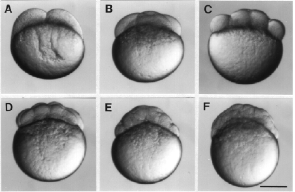

Figure 4
Modified from:
Kimmel et al., 1955.
Developmental Dynamics 203:253-310. Copyright © 1995 Wiley-Liss, Inc.
Reprinted only by permission of Wiley-Liss, a subsidiary of John Wiley &
Sons, Inc.
Fig. 4. Embryos during the cleavage period. Face views, except for B, which shows the embryo twisted about the animal-vegetal axis, roughly 45 degrees from the face view. A: 2-cell stage (0.75 h). B: 4-cell stage (1 h). C. 8-cell stage (1.25 h). D: 16-cell stage (1.5 h). E: 32-cell stage (1.75 h). F. 64-cell stage (2 h). Scale bar: 250 µm.

Figure 4